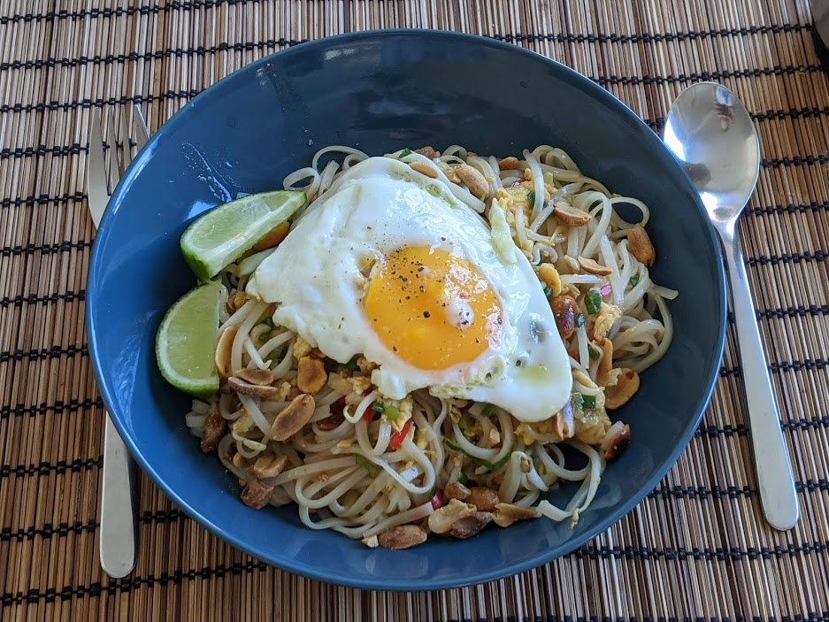

Nouilles de riz sautées

Ici avec un œuf au plat
Pour 3 personnes :
- 250g de nouilles de riz
- Deux piments
- Trois beaux oignons nouveaux
- Trois citrons verts
- 60g de cacahuètes grillées, idéalement non salées
- Trois œufs
- 150g de pousses de soja (techniquement, pousses de haricots mungo)
- 6 cuillères à soupe de sauce soja
- 4 cuillères à soupe de sauce d'huître, ou de sauce hoisin
- Deux cuillères à café de sucre
- Huile d'olive, sel, poivre
- Faire chauffer de l'eau bouillante, et lorsque ça frémit, éteindre le feu et faire tremper les nouilles de riz une petite dizaine de minutes (ou le temps qui est indiqué sur le paquet). Lorsque les dix minutes sont passées, les égoutter et les rincer à l'eau froide.
- Pendant ce temps, couper les piments en deux, enlever les pépins, et les couper en petites lamelles. Laver les oignons frais et les couper en fines tranches ou demi-tranches. Hacher les cacahuètes grossièrement. Presser la moitié des citrons verts, couper le reste en quartiers.
- Faire chauffer de l'huile d'olive dans une poêle à feu bien fort. Battre les œufs et les ajouter dans la poêle en remuant.
- Rajouter les piments, les oignons, et les pousses de soja, faire saisir à feu vif en mélangeant tout le temps.
- Baisser le feu légèrement, ajouter le sucre, la sauce soja, la sauce aux huîtres, le jus de citron vert, puis les nouilles et quasiment toutes les cacahuètes. Mélanger et laisser à feu moyen jusqu'à ce que le tout soit bien chaud.
- Servir chaud accompagné de quartiers de citron et du reste des cacahuètes ; on peut aussi faire cuire des œufs aux plat à côté et ajouter un œuf au plat par personne.